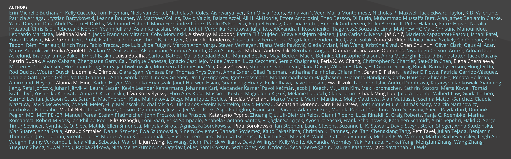
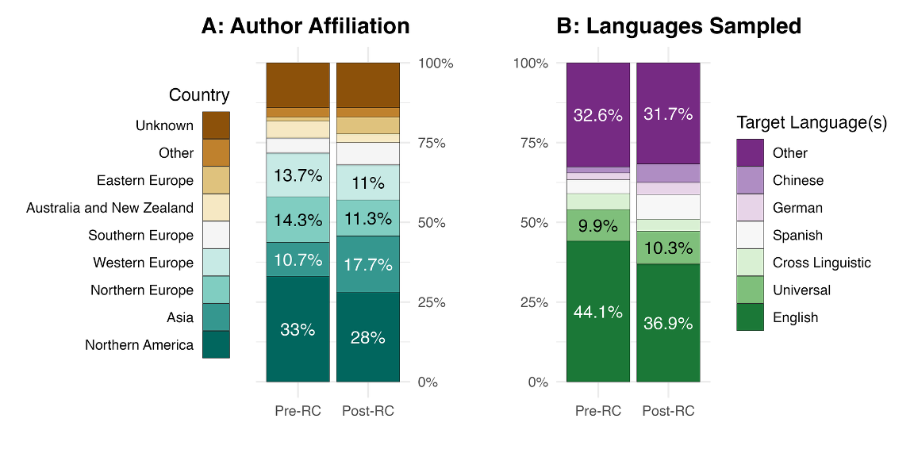
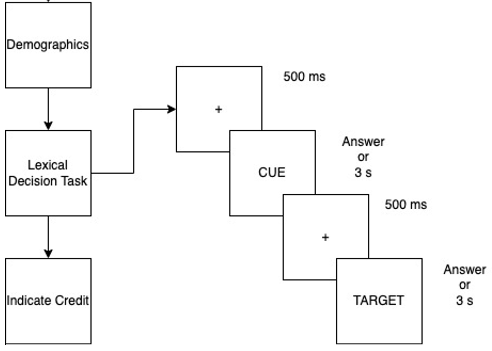
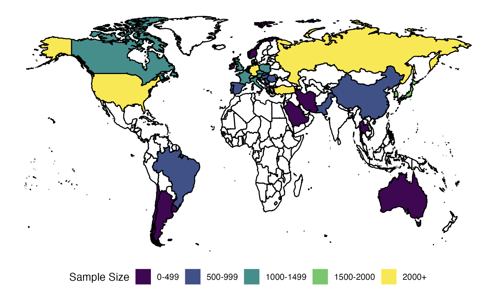
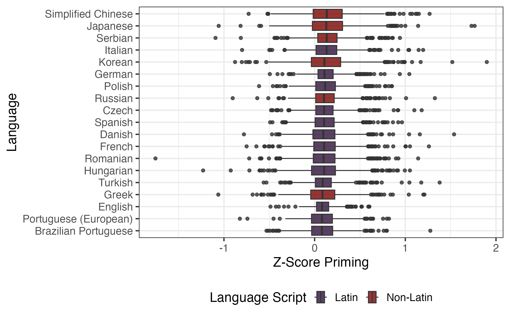
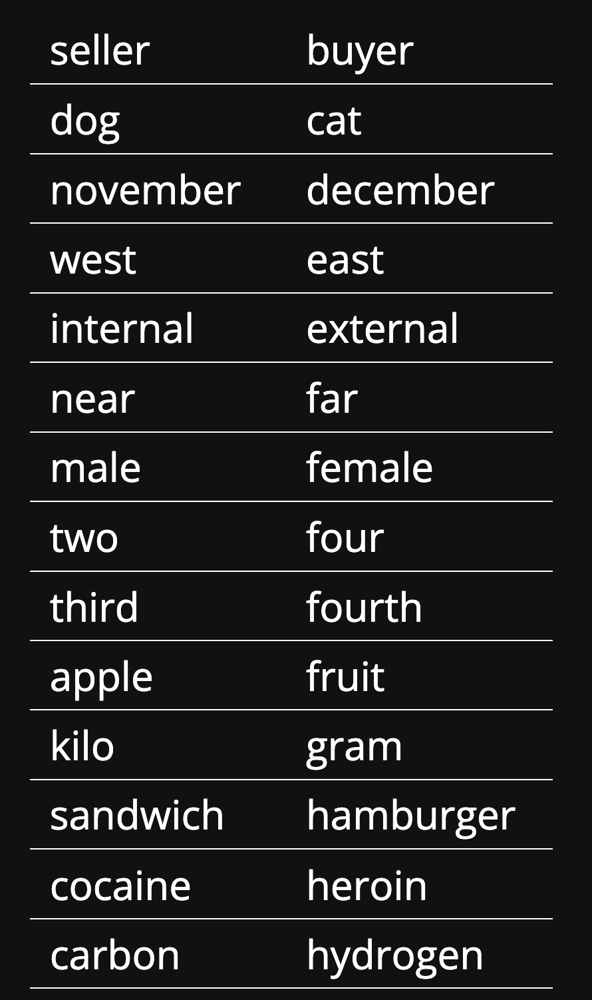
Loenneker et al. (2024)
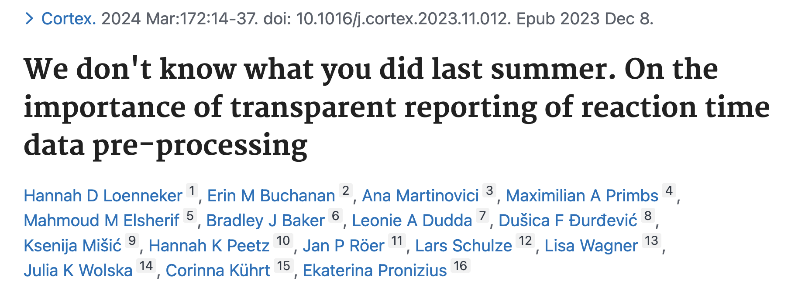
| Participants | Trials | Stimuli | |
|---|---|---|---|
| External Events | Duplicate trials | Miscodings | |
| Fixed | 18 years 80% accuracy 100 Trials |
< 160 ms > 3000 ms Correct |
|
| Data | Z-score 2.5 Z-score 3.0 |
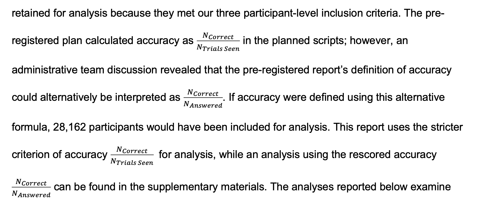
Heyman et al. (2025)
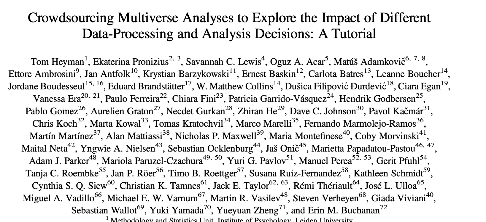
An analysis in which a researcher may:
Allows for the study of the robustness and sensitivity of the effect of analytic choices on the research results
All is a bit crazy…
What are the effects of processing choices on German priming?
Data Multiverse focusing on pre-processing
Assessing robustness
Not all combinations make sense together
Not accounted for: order effects
Each was examined on the full data and then excluded
Z-scoring was always calculated/excluded at the end
| Type | Explanation | Options |
|---|---|---|
| Participants | No exclusion* | None* |
| Participants | Age* | 18 years* |
| Participants | Accuracy | none, 75%, 80%, 85% |
| Participants | Number of Trials | none, 50, 100 |
| Participants | Performance cut off | 5%, 10% performers |
| Participants | RT cut off | Lowest RT variability 5%, 10% |
| Type | Explanation | Options |
|---|---|---|
| Trials | No exclusion | None |
| Trials | Lower Bound RT | None, 100, 160, 200 |
| Trials | Upper Bound RT | None*, 3000, 2500 |
| Trials | Z-Score | None, 2.5, 3.0 |
| Trials | Lower Bound | 5%, 10% trimming |
| Trials | Upper Bound | 5%, 10% trimming |
| Type | Explanation | Options |
|---|---|---|
| Stimuli | No exclusion | None |
| Stimuli | Accuracy | None, 25%, 50% |
| Stimuli | Sample size | None, 30, 50 |
| Stimuli | Lower Bound Accuracy | 5%, 10% trimming |
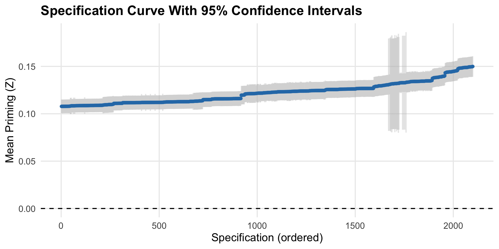
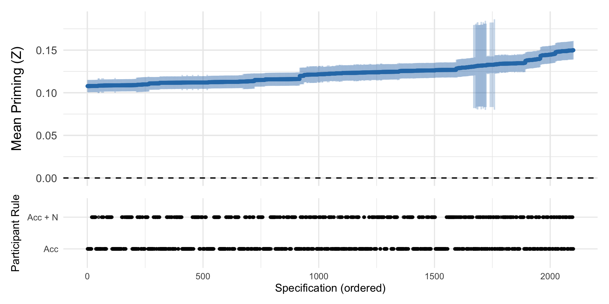
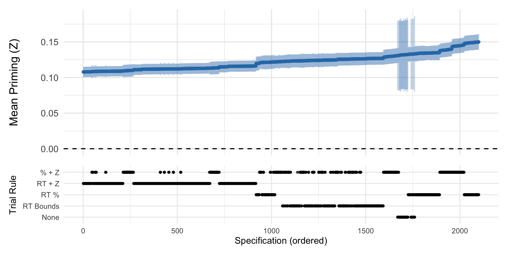
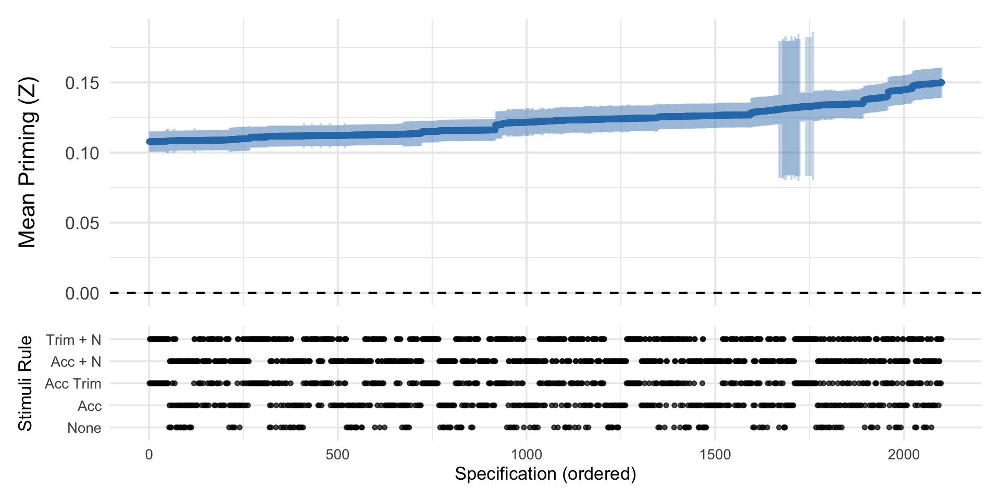
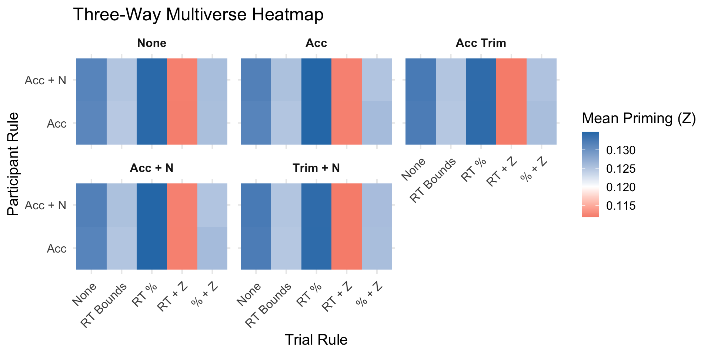